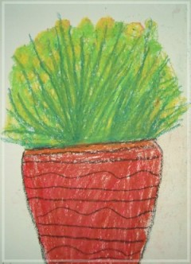

Lily, 你好棒! 阿姨素琴
生命中有許多美麗的東西，我們非常非常愛，希望永遠保有。我們的愛本來是好的，但永遠卻讓人恐懼，曾經有許多次，害怕失去所愛的恐懼，讓我們有太多太多的不捨。最後，讓她自由吧！
我們看見她，感到自己的心痛，她身體的痛，她總是勇敢的接受。（在醫院治療時，打針她還會主動幫護士小姐找自己的血管，那個小朋友不怕打針啊？她還會經驗老道的告訴阿香阿姨那一個護士小姐打針比較不痛喔！）
她對美的鑑賞力總是那麼高，她的創作總叫人驚嘆（您看過她的畫展了嗎？畫圖從來都不用構圖，簡直是天生的小畫家，不管什麼色彩她總是可以用的那麼美，她的手總是那麼靈巧，她的想像力總是那麼豐富，感謝 老師們的啟發︶她對吃也有一套（她曾說阿嬤煮的菜最好吃，阿嬤可以開一間餐廳，的確身經百戰的阿嬤廚藝絕對讚！）
她增長了我們的智慧（從她生病以來，讓我們更深刻體驗健康就是財富，健康就是本錢，讓我們更增進更多的知識，知道如何吃最健康，如何去照顧自己照顧家人，如何去關懷朋友，如何去體恤，她給我們生活太移太多啟示）她的聰明伶俐慧黠，善解人意（她貼心的悄悄話），她•在我們心中，永遠。
|
 |
•盆花 |